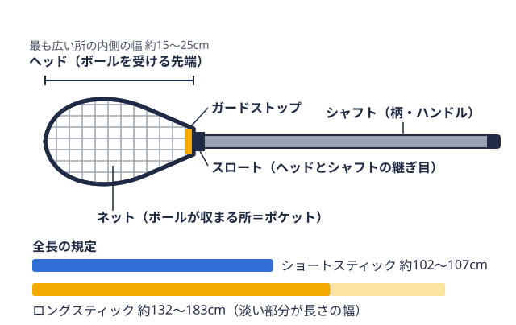

資金調達 2026-08-25
ラクロス部の部費はいくら？ 学生・保護者の負担を減らす資金調達の考え方
この記事の内容
先に結論：部費の金額は部ごとに大きく違う公開されている事例で見るラクロス部の予算・遠征費大学ラクロス部の運営費用は、部員が納める部費を中心にまかなわれている例が多く見られます。グラウンド使用料、遠征費、道具代、合宿費など支出項目は多岐にわたり、部の規模や遠征の多さによって必要な金額も変わります。この記事では、取材記事で公開されている部の予算・遠征費の事例と、大学部活動の費用負担に関する調査データを整理したうえで、部費だけに頼らずに運営資金を確保する方法を紹介します。
先に結論：部費の金額は部ごとに大きく違う
大学ラクロス部の部費について、全国の平均を示す公式な統計は見当たりません。金額は部ごとに大きく異なるため、「いくらか」を知るには、次の3つに分けて確認するのが現実的です。
- 毎月（または年額）の部費: グラウンド使用料・リーグ登録費・共用備品などに充てられる、部に納めるお金
- 個人で揃える初期費用: スティックボールを運ぶ・パスする・シュートするために使う、先に網が付いた棒状の道具。ボールは手で直接持てない。

用語辞典で見る・防具などの用具代。入部した年にまとまって発生しやすい - 遠征費・合宿費: 部費とは別に、参加する部員が個人で負担する形をとる部もある
入部を検討している人は、新歓の場でこの3つを分けて質問すると、年間の負担をイメージしやすくなります。
公開されている事例で見るラクロス部の予算・遠征費
ツナカレメディアの取材記事では、次のような部の予算・費用が紹介されています（金額は各記事の公開時点の内容です）。
| 部 | 公開されている内容 | 出典 |
|---|---|---|
| 北海道大学女子ラクロス部 | 年間予算は約100万円。収入は部費とOGからの支援で、遠征費は個人負担が基本 | ツナカレメディア（2026-01-28） |
| 愛媛大学男子ラクロス部 | 年間予算は約170万円。月によっては遠征の交通費だけで20万円かかることもある | ツナカレメディア（2026-01-20） |
| 立命館アジア太平洋大学ラクロス部 | 遠征費が1人あたり年間7万〜8万円の負担になっている | ツナカレメディア（2026-08-13） |
事例は限られますが、遠征を伴う部では交通費が大きな支出になりうることがうかがえます。遠征費の資金計画の立て方は、大学ラクロス部の遠征費はどう賄う？で詳しく解説しています。
用具の初期費用については、専門店の掲載価格（2026年9月時点）で男子用コンプリートスティックが12,100円〜31,400円、女子用スティックが12,600円〜75,200円という価格帯でした。区分ごとの価格はラクロススティックの値段は？にまとめています。
大学の部活動費、実際にどれくらい負担されているのか
ラクロス部に限ったデータではありませんが、株式会社部活メディアが2026年1月に発表した、大学・短大・専門学校などで部活動をしている（または過去3年以内にしていた）子どもを持つ保護者119人を対象とした調査（2025年11月末実施）によると、物価高の影響で「部活動費が以前より上がった」と感じた保護者は44.6%にのぼりました（出典: 株式会社部活メディア「物価高が大学スポーツに励む保護者を直撃」）。大学の部活動でも、家計への影響は決して小さくないことがうかがえます。
負担が増えたと感じる項目の内訳は、次のとおりです。
| 項目 | 回答割合 |
|---|---|
| 遠征費・交通費 | 48.7% |
| 用具代 | 41.2% |
| 合宿費 | 30.3% |
さらに、子どもの部活動費の負担割合について「全額保護者が負担している」という回答が43.7%と最多で、保護者が6割以上を負担している家庭は58.8%でした。この調査の範囲では、大学生になっても部活動費の多くを保護者が支えている家庭が一定数あることが読み取れます。
ラクロス部特有の支出構造
ラクロスは、クロス（スティック）やヘッドギア、マウスピースなど専用の道具を個人で揃える必要がある競技です。特に未経験者が多く入部する大学ラクロス部では、新入生の初期道具代がまとまって発生しやすい点が特徴です。道具選びも含めた部活選びのポイントは、大学でラクロスを始めるには？ 部活選びで見るべき5つのポイントでも取り上げています。
また、大学ラクロスは全国7地区（関東・関西・東海・北海道・東北・中四国・九州）に分かれてリーグ戦が行われる、全国規模の競技です（出典: 日本ラクロス協会（JLA）「全国地区公式戦：学生リーグ」）。所属する地区やリーグの階層によっては、他大学との練習試合や大会のために宿泊を伴う遠征が発生することもあり、遠征費・交通費が支出の中でも大きな割合を占めやすい構造になっています。
部費だけに頼らない資金調達の選択肢
部費は部員数の変動や物価の影響を受けやすいため、部費だけに頼ると運営が不安定になる場合があります。部費以外の資金調達手段として、次のような選択肢があります。
企業スポンサー・協賛
企業と協賛契約を結び、ユニフォームや練習着に企業ロゴを掲出したり、活動報告を行ったりする形の資金調達です。たとえば同志社大学ラクロス部男子では、スポンサー班が学生主体で企業にアプローチしていると紹介されています（出典: ツナカレメディア）。一方で、香川大学男子ラクロス部では部員1人1社で30社にスポンサーを募集したものの、継続的な支援は5社にとどまったと紹介されており（出典: ツナカレメディア）、継続してもらう工夫も欠かせません。担当者の仕事の進め方は大学ラクロス部の「渉外」とは？で解説しています。
OB・OG会からの支援
北海道大学女子ラクロス部のように、部費とOGからの支援で予算を組んでいる例もあります（前掲の表を参照）。寄付や大会協賛といった形で、現役世代の活動を後押しするOB・OG会もあります。
クラウドファンディング・オンライン寄付
大会出場や遠征費など、目的を絞った資金調達であれば、クラウドファンディングやオンライン寄付も選択肢になります。山口県立大学女子ラクロス部は、オンライン寄付の「ギビングキャンペーン」に参加して約15万円を集めたと紹介されています（出典: ツナカレメディア）。準備の流れや注意点は大学ラクロス部のクラウドファンディングとは？にまとめています。
部活・団体を無料掲載して企業との接点をつくる
自分たちで営業先を探すのが難しい場合、部活動・学生団体を無料で掲載できるサービスを活用して、企業側からの問い合わせを待つという方法もあります。ツナカレはそうしたマッチングの場のひとつで、部の情報を掲載しておくことで、協賛や採用に関心を持つ企業との接点が生まれる可能性があります。掲載自体は無料のため、資金調達の選択肢を広げる手段として検討してみる価値があります。
資金調達を成功させる運営のポイント
資金調達は、単発の施策だけで完結するものではありません。まず部員数を安定的に確保できれば、一人あたりの部費負担を抑えながら総額の運営資金を維持しやすくなります。新入生の獲得については新歓戦略の設計で詳しく解説しています。
また、限られた資金をどの活動に配分するかという優先順位づけも欠かせません。グラウンド時間や指導者、部員の可処分時間と同様に、資金も有限な資源のひとつです。シーズンから逆算して何にお金と時間をかけるかを決める考え方は、シーズン逆算の練習計画でも紹介しているので、あわせて参考にしてください。
支出を可視化し、部費・スポンサー収入・OB支援などの内訳を毎年の引き継ぎ資料に残しておくことも大切です。担当の主務や会計が代替わりするたびに手探りで運営方法を組み立て直すことになると、資金調達の継続が難しくなる場合があります。部費の集金方法や未納を防ぐ管理体制は大学ラクロス部の部費集金・会計管理はどうする？、引き継ぎ資料の作り方は大学ラクロス部の「引き継ぎ」はどう作る？で解説しています。
よくある質問
大学ラクロス部の部費の相場はいくらですか？
全国の平均を示す公式な統計は見当たらず、部によって大きく異なります。公開されている事例では、年間予算が約100万円（北海道大学女子ラクロス部）、約170万円（愛媛大学男子ラクロス部）という部があります。1人あたりの負担は、部費に加えて用具代・遠征費・合宿費がかかるかどうかで変わるため、新歓で内訳を確認するのが確実です。
入部した年にかかる費用は多いですか？
スティックや防具などの用具を個人で揃える場合、入部した年に初期費用がまとまって発生しやすくなります。スティックは専門店の掲載価格（2026年9月時点）で、男子用コンプリートが12,100円〜31,400円でした。防具を含めた一式の考え方はラクロス防具の選び方も参考にしてください。
遠征費は部費に含まれますか？
部によって異なります。北海道大学女子ラクロス部のように遠征費は個人負担が基本という例もあれば、部の予算から支出する部もあります。入部前に、部費に含まれる費用と別途かかる費用を確認しておきましょう。
まとめ
大学ラクロス部の運営費用は部費を中心に、遠征費・用具代・合宿費など多くの項目で構成されており、物価高の影響もあって学生・保護者の負担は決して軽くありません。部費の値上げだけで対応しようとするのではなく、企業スポンサー、OB・OG支援、クラウドファンディング、無料掲載サービスといった複数の資金調達手段を組み合わせて検討することが、部の運営を安定させる第一歩になります。まずは自分たちの部の支出項目を洗い出し、部費以外にどんな選択肢があるかを整理するところから始めてみてください。
出典
- 株式会社部活メディア「物価高が大学スポーツに励む保護者を直撃 『費用負担が上がった』との回答が4割超」
- 公益社団法人日本ラクロス協会（JLA）「全国地区公式戦：学生リーグ」
- ツナカレメディア 大学部活動インタビュー（北海道大学女子ラクロス部、愛媛大学男子ラクロス部、立命館アジア太平洋大学ラクロス部、同志社大学ラクロス部男子、香川大学男子ラクロス部、山口県立大学女子ラクロス部）
本記事は上記の公開情報をもとに構成しています。
遠征費・運営資金にお悩みの主務・会計の方へ
協賛募集はツナカレに無料で掲載できます。
オフシーズン・引退後に、長期インターンという選択
部活で培った力を実務で試す。16タイプ診断（30秒）で合う企業がわかります。